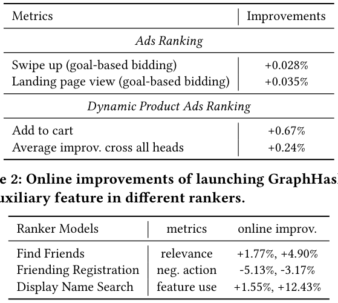
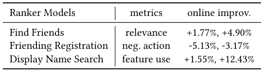
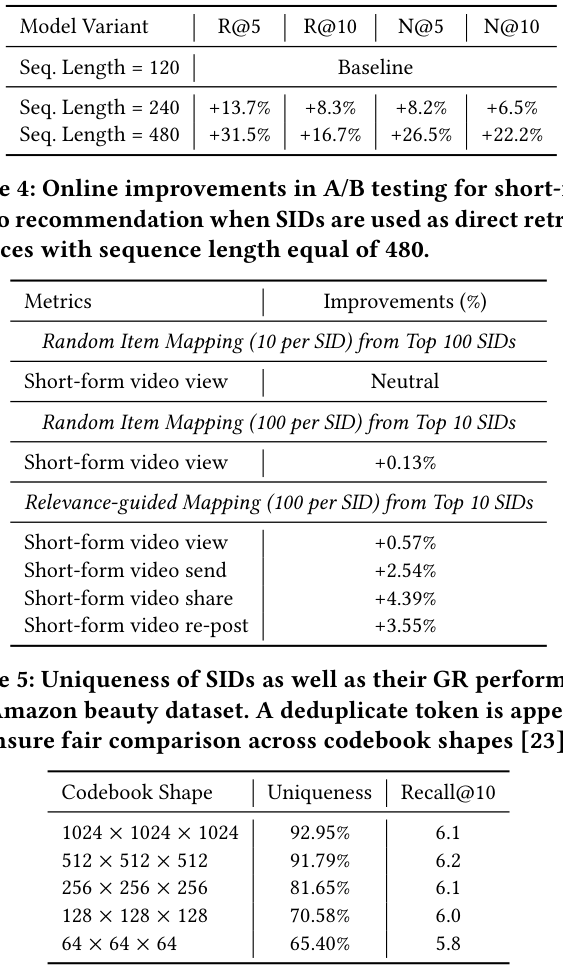
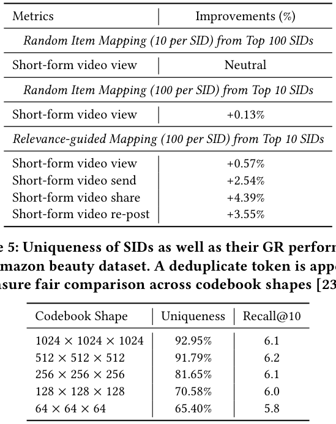
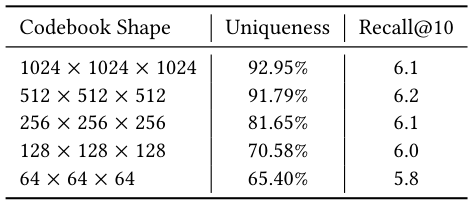
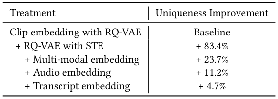

Semantic IDs for Recommender Systems at Snapchat: Use Cases, Technical Challenges, and Design Choices (Snapchat 推荐系统中的语义 ID：应用场景、技术挑战与设计选择)
- 会议/期刊: SIGIR 2026 (Industry Track)
- 推荐链路定位: 召回 (Retrieval，生成式检索 GR) + 精排 (Ranking，SID 作为辅助类别特征)
- 研究方向: 生成式推荐与离散语义 ID / CTR 预估与特征交叉
- 论文原文: https://arxiv.org/abs/2604.03949v1
- 开源代码: https://github.com/snap-research/GRID
TL;DR (核心速览)
本文是 Snapchat 在 SIGIR 2026 Industry Track 的工业实践报告，针对语义 ID (SID) 大规模落地中的两大痛点——RQ-VAE 训练时的码本坍缩 (Codebook Collapse) 与生成式检索推理时的 SID-to-Item 碰撞消歧，提出 STE 全码本反传 + 多模态嵌入融合 + 启发式桶内消歧 + 深度优先取回四项设计。SID 作为辅助特征在 Ads/DPA 排序上带来 +0.028%~+0.67% AUC 提升，作为直接检索源在短视频场景带来线上 +0.57% 播放、+4.39% 分享，并已在多个生产模型上线。
Background & Motivation (背景与动机)
- 领域背景与主流范式: 现代推荐系统普遍依赖原子 ID (Atomic ID)——每个用户/物品分配唯一离散 token，映射到可学习稠密嵌入，从而把稀疏交互压缩为连续隐向量。近年 语义 ID (SID) 成为新范式：由 RQ-VAE / VQ-VAE / Residual K-means 等 tokenizer 对基础模型（LLM/VLM）或协同信号提取的语义表征做残差量化，得到有序离散码序列，其单层基数远小于原子 ID，并在 ID 空间诱导语义聚类（相似物品共享前缀码）。
- 现有方法局限 (Limitations of Prior Work):
- 参数爆炸：原子 ID 需为每个实体存储独立嵌入向量，用户/物品规模巨大时嵌入表参数量不可控；
- 缺乏归纳能力：新用户/新物品在嵌入表中无条目，冷启动无表征可生成；
- 长尾泛化差：热门 ID 获得绝大多数梯度更新，尾部实体表征欠训练。
- 核心挑战 (Key Challenge): SID 在学术基准上有效，但工业级落地非平凡。作者在 Snapchat 实践中遭遇两个具体矛盾：(a) RQ-VAE tokenizer 训练时出现严重码本坍缩，仅少量码字被使用，语义表达力被瓶颈化；(b) SID 作为检索目标时，因单层码本基数远小于原子 ID，大量相似物品映射到完全相同的码序列 (collision)，生成模型无法唯一确定应召回哪个物品。
- 核心洞察与切入点 (Key Insight): 作者并非提出全新模型，而是以工业实践者视角系统梳理"踩坑—实验—设计迭代"闭环：码本坍缩的根因是 argmax 离散化导致梯度只更新被选中码字（稀疏更新 + 初始化敏感 → 死码字），因此用 STE 让梯度流经整个码本；碰撞问题的根因是 SID 语义哈希的"粗粒度"本质，因此用两阶段消歧（生成模型定语义类别 + 轻量启发式定具体物品）替代强行追求唯一性。此外作者通过 Amazon Beauty 实验质疑了"SID 唯一性是黄金标准"的社区共识。
Problem Formulation & Method (问题定义与方法架构)
1. 符号定义与输入表征 (Notations & Input Representations)
- 物品/用户 \(i\) 的语义特征 \(x_i\)，经模态编码器 \(\phi(\cdot): x \to \mathbb{R}^d\)（LLM/VLM 等）得到隐表征 \(h_i \in \mathbb{R}^d\)，\(d\) 为编码器输出维度。
- RQ-VAE 记为 \(\text{RQ-VAE}(\cdot;\theta): \mathbb{R}^d \to \{0,1,\dots,K-1\}^L\)，其中 \(K\) 为每层码本码字数，\(L\) 为码本层数，\(\theta\) 含编码器、解码器与 \(L\) 个码本。
- 编码器 \(\text{Enc}(\cdot): \mathbb{R}^d \to \mathbb{R}^n\) 将 \(h_i\) 映射为中间嵌入 \(h_i^0\)（第 0 层残差），\(n\) 为 RQ-VAE 隐维度；第 \(l\) 层码本 \(\mathbf{C}^l \in \mathbb{R}^{K \times n}\)。
- 输出：SID 码序列 \((\text{sid}^0, \text{sid}^1, \dots, \text{sid}^{L-1})\)，每层取值于 \(\{0,\dots,K-1\}\)。
2. 整体流水线 (Overall Architecture)
数据流：原始多模态特征（文本/图像/音频/转写）→ 各模态编码器 \(\text{Enc}_m\) → 求和聚合为统一表征 \(h_i\) → RQ-VAE 残差量化得 SID → 下游两条使用路径：(1) 作为辅助类别特征喂入排序/召回模型；(2) 作为生成式检索的目标空间，序列推荐器自回归生成未来物品的 SID 序列，再经 SID-to-Item 消歧映射回具体物品。
flowchart TD
A["输入层: 物品多模态特征 (文本/图像/音频/转写) 与用户行为序列"] --> B["多模态编码器 Enc_m 求和融合为 h_i"]
B --> C["RQ-VAE 残差量化 (STE 全码本反传) 生成 SID 码序列"]
C --> D1["路径一: SID 作为辅助类别特征"]
C --> D2["路径二: SID 作为生成式检索目标空间"]
D1 --> E1["排序/召回模型 (Ads/DPA/Friending/Search)"]
D2 --> E2["序列推荐器自回归生成 SID"]
E2 --> F["SID-to-Item 消歧: 启发式桶内消歧 + 深度优先取回"]
E1 --> G["预测打分 / 物品召回输出"]
F --> G3. 核心模块设计与数学原理 (Key Designs & Formulations)
(1) RQ-VAE 残差量化基础与码本坍缩的 STE 修复
第 0 层码字由余弦相似度 argmax 得到：
后续层通过残差量化：
解码时聚合各层质心重构：\(\hat{h}_i = \text{Dec}\left(\sum_{l} \mathbf{C}^l[\text{sid}^l]\right)\)。
问题物理直觉：标准 RQ-VAE 中 argmax 使码本优化本质离散，反向传播只更新被选中的码字行，形成稀疏更新；初始化不佳时大量码字成为"死码字"，永不获得梯度。作者用 Straight-Through Estimator (STE) 让梯度流经整个码本，将式 (3) 修改为：
其中 \(\text{sim}(h_i^l, \mathbf{C}^l) \in \mathbb{R}^K\) 为第 \(l\) 层残差与整层码本的余弦相似度，\(\text{sg}(\cdot)\) 为 stop-gradient。这样损失可反传通过分配机制，整个码本参与更新，显著降低坍缩风险。
(2) 多模态嵌入融合缓解坍缩
作者观察到单一嵌入源（如纯文本）输入分布同质、方差低，RQ-VAE 只需少量质心即可重构，反而加剧坍缩。因此采用求和聚合的多源融合：
多模态信号使输入空间方差与拓扑复杂度显著提升，量化过程被迫跨越更宽流形以最小化重构损失，从而提升码本利用率。
(3) SID-to-Item 消歧：启发式桶内消歧 + 深度优先取回
- 启发式桶内消歧 (Heuristic-based intra-code disambiguation)：若一个生成 SID 关联多个物品，不将其视为等权相关，而是引入物品级元数据做二级排序。例如视频检索中用累计观看时长、内容新鲜度等历史相关性/时序特征优先高质量或业务指标相关物品。生成模型负责"定语义类别 (SID)"，轻量启发式负责"定具体物品"。
- 深度优先于广度 (Prioritize retrieval depth over breadth)：固定检索预算下，从少数 top-ranked SID 中取回大量物品（深度）优于跨多个低排名 SID 各取少量（广度）。实验表明模型对 top SID 置信度高，最大化 top SID 的物品产出显著更优。
4. 训练目标、负采样与推理复杂度 (Optimization, Negative Sampling & Complexity)
- 损失函数: RQ-VAE 由重构损失 + commitment 损失联合监督（原文引用 [17]），前者训练忠实重构输入，后者防止码本无界增长与坍缩。原文未给出具体权重系数与温度数值（原文未报告）。
- 训练负采样策略: 本文为工业实践报告，生成式检索部分沿用作者前作 [11] 的序列推荐器架构，原文未报告具体负采样方案（如 in-batch / hard negative）；排序侧为常规 CTR 排序模型，负采样细节未披露。
- 时间与空间复杂度: 原文未给出理论复杂度与单 epoch 耗时/峰值显存数值（原文未报告）。可定性说明：SID 单层基数 \(K\) 远小于原子 ID 基数，嵌入表参数量大幅压缩；生成式检索推理需 beam search 或采样产出候选 SID，再经消歧映射，作者通过"深度优先取回"在固定预算下优化物品产出。序列长度从 120 增至 480 带来显著离线收益，但受基础设施约束止步于 480。
Experimental Setup & Evaluation Protocol (实验设置与评估协议)
- 数据集统计与预处理: 主实验为 Snapchat 内部工业数据（Ads、DPA、Friending、Search、短视频内容推荐），原文未披露用户/物品/交互规模统计（原文未报告）。学术基准仅使用 Amazon Beauty 数据集 [7] 做 SID 唯一性与 GR 性能相关性分析，原文亦未给出其统计量表。
| 数据集 (Dataset) | 用户数 (#Users) | 物品数 (#Items) | 交互数 (#Interactions) | 稀疏度/密度 (Sparsity) | 模态/辅助特征说明 |
|---|---|---|---|---|---|
| Snapchat 内部数据 (Ads/DPA/Friending/Search/短视频) | 原文未报告 | 原文未报告（Friending 侧压缩 900M+ 原始用户 ID） | 原文未报告 | 原文未报告 | 文本元数据 (Qwen-Embedding)、图拓扑 (GraphHash)、多模态 (CLIP/音频/转写) |
| Amazon Beauty | 原文未报告 | 原文未报告 | 原文未报告 | 原文未报告 | 用于 SID 唯一性 vs. GR 性能分析 |
- 数据划分方式 (Splitting Strategy): 原文未明确说明离线训练/验证/测试的具体划分策略（LOO / Ratio / 全局时间戳切分均未提及），原文未报告。线上 A/B 为真实流量实验，天然按时间推进，无穿越问题。
- 排名评测协议 (Ranking Protocol): 排序侧报告 AUC（离线）与业务指标（线上）；生成式检索侧报告 Recall@5/10、NDCG@5/10（表 3），Amazon Beauty 上报告 Recall@10（表 5）。候选集打分是否为全库排序或采样排序，原文未报告。
- 评价指标与显著性检验: 离线 AUC（0.01% 提升视为显著）、Recall@K、NDCG@K、SID 唯一性 (Uniqueness)；线上为播放/发送/分享/转发/关注/注册负向行为等业务指标。原文未报告多随机种子方差或配对显著性检验（如 \(p<0.05\)）。
Key Experimental Results (核心实验结果)
1. 主实验对比 (Main Results)
SID 作为辅助特征（排序侧，离线 AUC）：

表 1 显示：Ads Ranking 中 Swipe up 提升 +0.028%、Landing page view 提升 +0.035%；DPA Ranking 中 Add to cart 提升 +0.67%，全头部平均 +0.24%。DPA 因广告主目录高频更新导致物品 ID 剧烈churn，SID 带来的收益更为显著。
SID 作为辅助特征（线上 A/B）：

表 2 显示 GraphHash SID 上线后：Find Friends relevance +1.77%/+4.90%，Friending Registration 负向行为 -5.13%/-3.17%，Display Name Search 功能使用 +1.55%/+12.43%。GraphHash 将 900M+ 原始用户 ID 层次聚类压缩为紧凑 SID 集。
SID 作为生成式检索直接目标（短视频，离线）：

表 3 显示：序列长度从 120 基线增至 240 带来 R@5 +13.7%、N@5 +8.2%；增至 480 带来 R@5 +31.5%、R@10 +16.7%、N@5 +26.5%、N@10 +22.2%。
SID 作为生成式检索直接目标（短视频，线上 A/B，序列长度 480）：

表 4 显示消歧策略的关键性：随机映射（top 100 SID 各取 10 物品）播放中性；随机映射（top 10 SID 各取 100 物品）+0.13%；相关性引导映射（top 10 SID 各取 100 物品） 带来播放 +0.57%、发送 +2.54%、分享 +4.39%、转发 +3.55%。
2. 消融实验与控制变量分析 (Ablation Study)
SID 唯一性 vs. GR 性能（Amazon Beauty）：

表 5 揭示非线性关系：码本形状 1024³ 唯一性 92.95% / Recall@10 6.1；512³ 唯一性 91.79% / Recall@10 6.2（最高）；256³ 唯一性 81.65% / Recall@10 6.1；128³ 唯一性 70.58% / Recall@10 6.0；64³ 唯一性 65.40% / Recall@10 5.8。唯一性极低时提升唯一性确实显著改善 GR；但超过约 70% 阈值后收益饱和，继续追求唯一性几乎无额外增益。作者据此主张唯一性应作为"防坍缩 sanity check"而非黄金标准。
内部数据上不同处理对 SID 唯一性的贡献：

表 6 显示：以 CLIP embedding + RQ-VAE 为基线，+STE 带来唯一性 +83.4%（贡献最大），+多模态嵌入 +23.7%，+音频嵌入 +11.2%，+转写嵌入 +4.7%。这直接验证了 STE 是缓解码本坍缩的最关键设计，多模态融合为次要贡献。
3. 稀疏度/冷启动分桶与超参敏感度 (Sparsity Buckets & Hyperparameters)
- 长尾/冷启动: 原文定性指出 SID 通过共享层次结构使 token 嵌入在整个物品目录上获得频繁梯度更新，缓解冷启动与长尾欠训练，但未报告按交互频次分桶的定量对比。
- 关键超参数敏感度: 码本形状 \(K^L\) 对唯一性与 GR 性能的影响见表 5（\(K\) 从 64 到 1024）；序列长度 \(L_{\text{seq}}\) 从 120→240→480 的收益见表 3。温度系数、损失权重等原文未报告。
- 线上 A/B 测试结果: 已在上文表 2、表 4 中列出，覆盖 Friending/Search 排序与短视频生成式检索两类场景，均为真实生产流量实验。
Highlights, Limitations & Critiques (亮点、局限与审稿级批判)
- 核心亮点与可迁移性:
- STE 全码本反传是解决 RQ-VAE 码本坍缩的通用算子，可直接迁移到任何基于残差量化的生成式推荐 tokenizer（TIGER、OneRec 等），表 6 的 +83.4% 唯一性提升给出强证据；
- 多模态求和融合提升输入方差以对抗坍缩，思路简单但有效，适用于图文电商、短视频等多模态场景；
- "生成定类别 + 启发式定物品"的两阶段消歧与深度优先取回是工业 GR 落地的实用工程范式，表 4 中相关性引导映射相对随机映射的 +0.44pp 播放增益（0.13%→0.57%）量化了消歧策略的价值；
- 对"SID 唯一性=黄金标准"的质疑（表 5 的 70% 饱和阈值）具有社区纠偏意义，提示后续研究应寻找兼顾语义丰富度与物品区分度的离线代理指标。
- 局限性与审稿视角批判 (Critical Limitations):
- 评估协议披露不足：作为 Industry Track 论文，内部数据规模、划分策略、负采样方案、损失权重、随机种子方差与显著性检验均未报告，离线结果的可复现性与统计严谨度受限；
- 学术基准覆盖薄弱：仅在 Amazon Beauty 上做唯一性相关性分析，未在公开基准上与 TIGER、LC-Rec 等生成式检索基线做完整主实验对比，方法优越性主要依赖内部线上指标支撑；
- AUC 提升幅度极小：Ads Ranking 的 +0.028%/+0.035% 虽被作者称为"显著"（阈值 0.01%），但绝对量级微小，需警惕多重比较与流量波动带来的假阳性；
- 消歧依赖领域启发式：相关性引导映射需人工设计元数据特征（观看时长、新鲜度），跨场景迁移需重新调参，缺乏端到端可学习消歧模块；
- 理论分析缺失：STE 与多模态融合为何缓解坍缩仅有直觉解释，缺少码本利用率、死码字比例等定量诊断指标随训练变化的曲线分析。
Rating (四维评分)
- 方法创新性 (Novelty): ⭐⭐⭐（STE 与多模态融合为工程改良而非全新范式，但对工业痛点针对性强）
- 评估协议与实验扎实度 (Protocol & Experiments): ⭐⭐⭐（线上 A/B 充分且多场景覆盖，但离线协议披露不足、公开基准对比薄弱）
- 写作与数学规范度 (Clarity & Rigor): ⭐⭐⭐⭐（RQ-VAE 公式与 STE 修改清晰，挑战—设计—实验叙事结构完整）
- 工业落地与复现价值 (Industrial & Practical Value): ⭐⭐⭐⭐⭐（多生产模型上线 + 开源 GRID 代码库，工程参考价值极高）